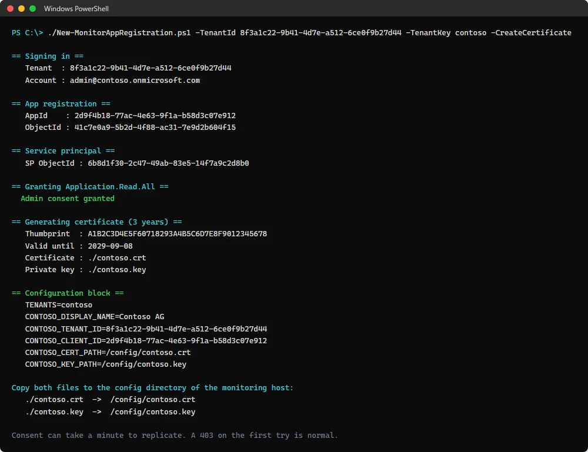
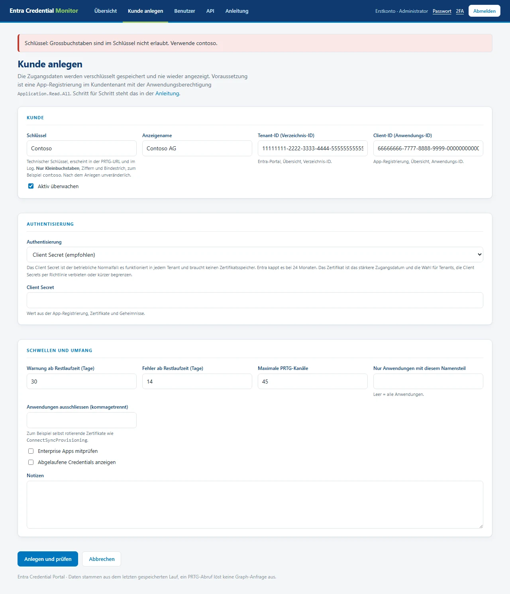
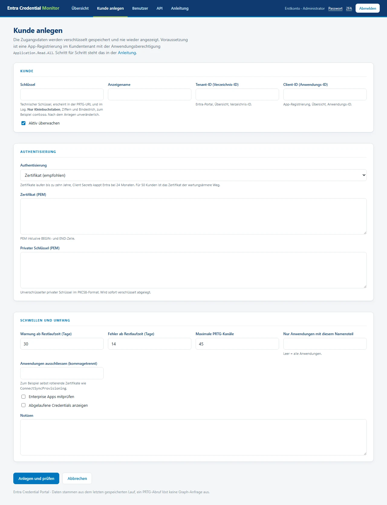
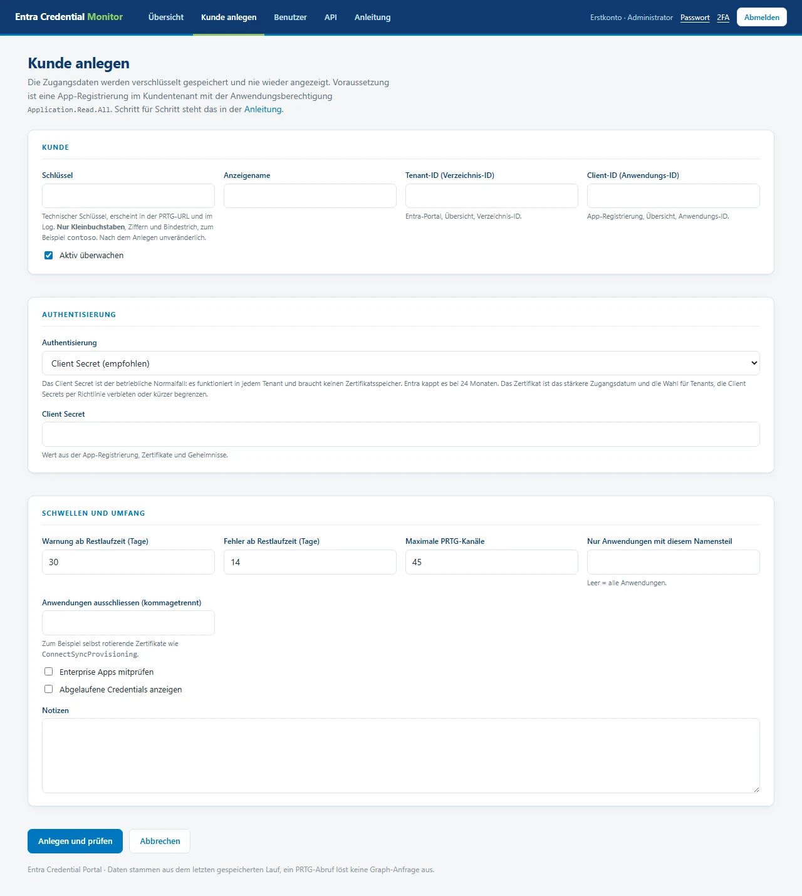
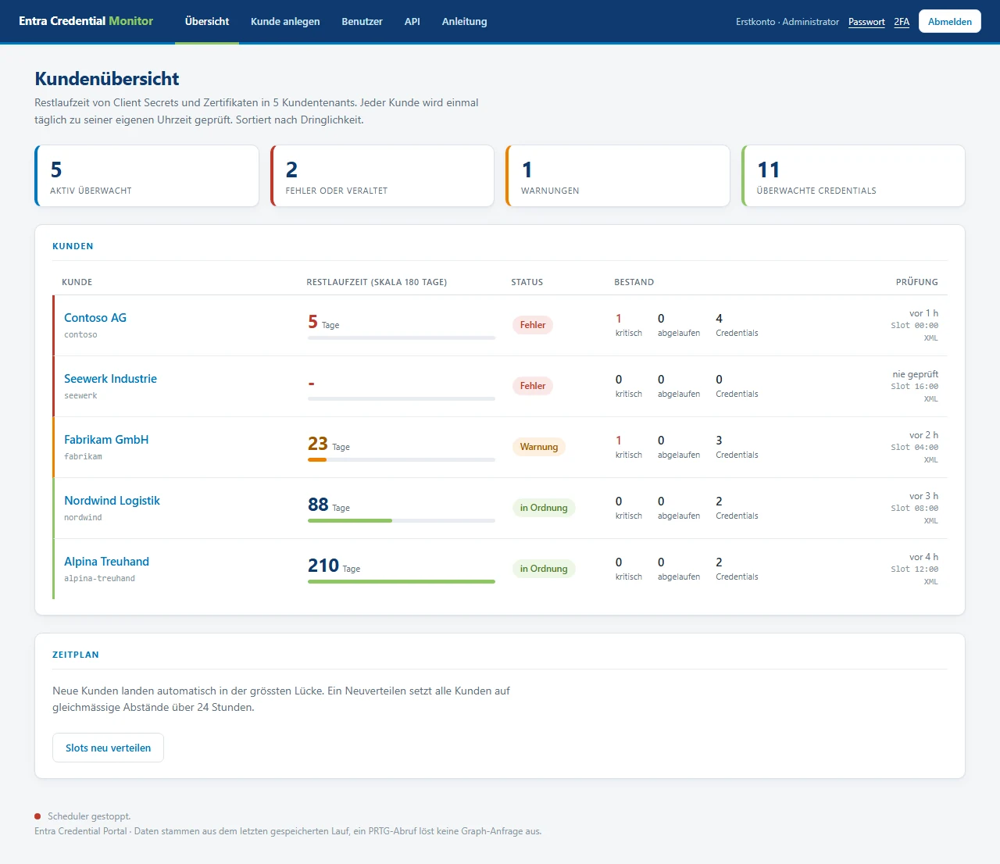
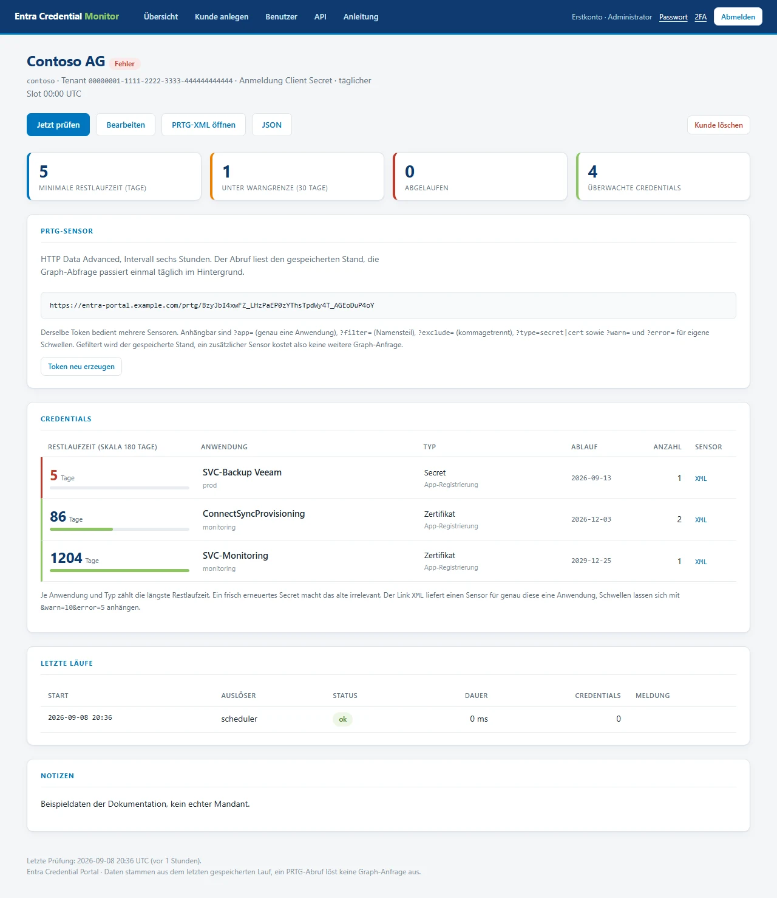

Was der Monitor im Kundentenant darf: genau eine Anwendungsberechtigung,
Application.Read.All. Microsoft Graph gibt Secret-Werte grundsätzlich nie heraus,
gelesen werden nur Metadaten wie Name und Ablaufdatum. Schreiben kann der Monitor nichts.
Voraussetzungen
| Wo | Was |
|---|---|
| Kundentenant | Konto, das App-Registrierungen anlegen und Admin Consent erteilen darf. Application Administrator plus Privileged Role Administrator, oder Global Administrator. |
| Eigener Rechner | PowerShell 7 und das Modul Microsoft.Graph.Applications.
Installation: Install-Module Microsoft.Graph.Applications -Scope CurrentUser |
| Portal | Konto mit der Rolle Administrator oder Techniker. |
Schritt für Schritt
Verzeichnis-ID des Kunden heraussuchen
Im Entra-Portal des Kunden unter Übersicht steht die Verzeichnis-ID (Tenant-ID).
Alternativ genügt eine verifizierte Domain, etwa contoso.ch.
Script ausführen
Das Script liegt im Repository unter scripts/New-MonitorAppRegistration.ps1.
Der Schlüssel nach -TenantKey ist der technische Name des Kunden und muss
kleingeschrieben sein.
./New-MonitorAppRegistration.ps1 `
-TenantId 8f3a1c22-9b41-4d7e-a512-6ce0f9b27d44 `
-TenantKey contoso `
-CreateCertificateEs öffnet sich die Anmeldung am Kundentenant. Über SSH oder in einem Terminal ohne
Browser hilft -UseDeviceCode.

Notieren, was gebraucht wird
Aus der Ausgabe werden vier Werte übernommen. Die beiden PEM-Dateien liegen im aktuellen Verzeichnis.
| Wert | Woher | Wofür |
|---|---|---|
| Tenant-ID | Parameter -TenantId | Feld im Portal |
| AppId | Abschnitt App registration | Client-ID im Portal |
contoso.crt | Datei im Arbeitsverzeichnis | Zertifikat (PEM) |
contoso.key | Datei im Arbeitsverzeichnis | Privater Schlüssel (PEM) |
Kunde im Portal anlegen
Im Portal auf Kunde anlegen. Der Schlüssel ist derselbe wie
-TenantKey im Script.
Der Schlüssel muss kleingeschrieben sein. Erlaubt sind Kleinbuchstaben, Ziffern und Bindestrich, 2 bis 48 Zeichen. Er erscheint später in der PRTG-URL und lässt sich nach dem Anlegen nicht mehr ändern. Wer den Anzeigenamen hineinschreibt, bekommt diese Meldung:

Bei Authentisierung wird Zertifikat gewählt. Das Formular blendet daraufhin das Feld für das Client Secret aus und zeigt nur die beiden PEM-Felder.

contoso.crt kommt in das
obere Feld, der von contoso.key in das untere, jeweils mit BEGIN- und
END-Zeile.Wer stattdessen ein Client Secret hinterlegt, wählt Client Secret. Dann verschwinden die PEM-Felder und nur das Secret bleibt.

Schwellen setzen
Die Vorgaben passen für die meisten Kunden.
| Feld | Vorgabe | Wirkung |
|---|---|---|
| Warnung ab Restlaufzeit | 30 Tage | Kanal wird gelb |
| Fehler ab Restlaufzeit | 14 Tage | Kanal wird rot |
| Maximale PRTG-Kanäle | 45 | PRTG erlaubt 50, drei davon sind die Zusammenfassung |
| Anwendungen ausschliessen | leer | Für selbst rotierende Zertifikate wie ConnectSyncProvisioning |
| Enterprise Apps mitprüfen | aus | Nimmt SAML-Signaturzertifikate dazu, vervielfacht die Kanäle |
Anlegen und prüfen speichert den Kunden und startet sofort einen ersten Lauf.
Ergebnis kontrollieren
Nach dem ersten Lauf steht der Kunde in der Übersicht, sortiert nach Dringlichkeit.

Ein Klick auf den Kunden öffnet die Einzelansicht mit allen Credentials, den Sensor-URLs und dem Verlauf der Läufe.

Wenn der erste Lauf scheitert
Der Fehler steht im Klartext beim Kunden, mitsamt dem AADSTS-Code von Entra.
| Meldung | Ursache |
|---|---|
AADSTS90002 Tenant not found | Tenant-ID falsch |
AADSTS700016 Application not found | Client-ID falsch oder App im falschen Tenant |
AADSTS7000215 Invalid client secret | Secret falsch oder abgelaufen |
AADSTS700027 client assertion | Zertifikat nicht in der App-Registrierung hinterlegt |
HTTP 403 auf /applications | Application.Read.All fehlt oder kein Admin Consent |
Ein 403 unmittelbar nach dem Anlegen ist normal. Der Consent braucht im Tenant bis zu einer Minute, bis er repliziert ist. Einmal Jetzt prüfen genügt.